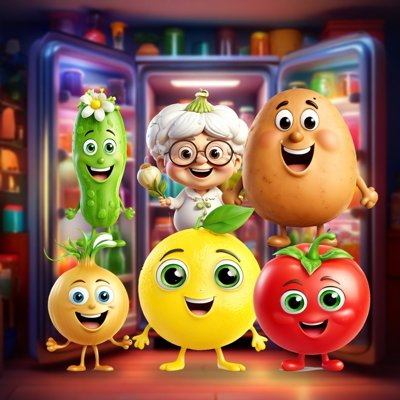

نهارك سلطة 🥗
كل يوم حكاية جديدة من التلاجة.. أحلى من السلطة نفسها 🍋🍅
قناة كوميدية عائلية بالعامية المصرية، أبطالها خضار وفاكهة كرتون: ليمونة، طمطم، خيارة، بطاطس، تيتا ثومة وبصلة.
Naharak Salata is a family-friendly Egyptian Arabic comedy channel of short animated videos with talking fruit and vegetable characters. Our own tool creates the videos and posts them to our own accounts on TikTok, Instagram and YouTube.